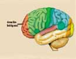

HAREKETLERÝMÝZÝ YÖNLENDÝREN BÖLGE
“Hayýr; eðer o, (bu tutumuna) bir son vermeyecek olursa, andolsun, onu perçeminden tutup sürükleyeceðiz; O yalancý, günahkar olan alnýndan.„
(Alak Suresi, 15-16)
Yukarýdaki ayetlerde geçen "yalancý, günahkar olan alýn" tanýmlamasý son derece dikkat çekicidir. Çünkü son yýllarda yapýlan araþtýrmalar, kafatasýnýn ön alýn bölgesinde, beynin bazý faaliyetleri yöneten bölümünün bulunduðunu göstermiþtir. 1400 yýl önce Kuran'da dikkat çekilen bu bölge ve görevi hakkýndaki bilgilere günümüz bilim adamlarý ancak son 60 yýl içinde açýklama getirilebilmiþlerdir. Kafatasýnýn içine, baþýn ön kýsmýna bakýldýðýnda beynin ön alýn bölgesi görülecektir. Bu bölgenin fonksiyonlarý hakkýnda fizyoloji dalýnda yapýlan araþtýrmalar neticesinde elde edilen bilgiler Essentials of Anatomy and Physiology isimli kitapta þu þekilde geçmektedir:
"Hareketlerin motivasyonu, planlama öngörüþü ve baþlatýlmasý alýn loblarýnýn ön kýsmý olan ön alýn bölgesinde (cerebrum) gerçekleþir. Burasý çaðýrýþým (birlik) korteksinin bir bölgesidir…"Kitapta bu bölge ile ilgili ayrýca þu ifadeler yer almaktadýr:
"Hareketle olan ilgisiyle beraber, ön alýn bölgesinin ayný zamanda saldýrganlýðýn da fonksiyonel merkezi olduðu düþünülmektedir…"

Bu açýklamalardan da anlaþýldýðý gibi, beynin ön alýn bölgesi, planlama, motivasyon ve iyi veya kötü hareketlerin baþlatýlmasý, yalan veya doðrunun söylenmesi ile ilgili faaliyetlerin tümünü yürütmektedir. Görüldüðü gibi Alak Suresi'nde geçen "yalancý günahkar olan alýn" ifadesi ile yukarýdaki tanýmlama büyük bir paralellik göstermektedir. Bilim adamlarýnýn son altmýþ yýl içinde keþfettikleri bu gibi bilimsel gerçekler Kuran ayetlerinde asýrlarca önce Allah tarafýndan insanlara haber verilmiþtir.